바탕화면에 상주하는 메모장이에요. 메모를 주제별로 정리하고, MD(마크다운) 파일로 내보낼 수 있어요. 옵시디언 없이도 쓸 수 있고, 옵시디언 Vault 폴더를 저장 위치로 지정하면 옵시디언과도 바로 연동돼요. 달력과 가계부도 같이 들어 있어요.
🚀시작하기
먼저 주제를 만들어야 메모를 쓸 수 있어요. 이 앱은 메모를 주제별로 나눠서 관리하는 게 핵심이에요. 설정 > 주제관리에서 주제를 먼저 만들어 주세요. 주제마다 색과 아이콘 글자를 정할 수 있고, 만들면 위젯에 그 주제 버튼이 생겨서 누르는 즉시 새 메모가 떠요.
순서는 이렇게예요.
1. 주제 만들기 — 위젯의 ⚙ 를 눌러 설정을 열고, 주제관리 탭에서 "업무", "장보기" 같은 주제를 만들어요.
2. 메모 쓰기 — 위젯 위쪽에 생긴 주제 버튼을 누르면 그 주제로 새 메모창이 떠요.
3. 필요하면 내보내기 — 옵시디언이나 다른 마크다운 앱을 쓴다면, 설정 > MD설정에서 저장 폴더를 정한 뒤 메모창의 .md 버튼으로 내보내면 돼요. 안 쓰셔도 괜찮아요.
위젯과 메모창, 달력은 작업표시줄에 나타나지 않아요. 트레이 아이콘으로 관리하시면 돼요(설정 화면만 예외로 작업표시줄에 나와요 — 설정 중에 다른 프로그램을 눌러도 다시 찾을 수 있게 해뒀어요).
🖱트레이 아이콘
작업표시줄 오른쪽 아래(숨겨진 아이콘 포함)에 있는 트레이 아이콘을 우클릭하면 메뉴가 나와요.
일반 새 메모 / 주제별 새 메모 — 새 메모창을 엽니다.
위젯 열기/닫기 — 위젯을 껐다 켭니다.
달력 열기/닫기 — 바탕화면 달력을 껐다 켭니다.
설정 — 설정 화면을 엽니다.
도움말 — 지금 보고 있는 이 화면을 엽니다.
환영 화면 다시 보기 — 처음 실행할 때 나왔던 소개 화면을 다시 봅니다.
종료 — 앱을 완전히 끕니다.
트레이 아이콘을 그냥 클릭(좌클릭)하면 위젯이 열리거나 앞으로 나와요. 더블클릭하면 새 메모가 하나 생겨요. 달력은 여기서만 열 수 있어요 — 위젯에는 달력 버튼이 없어요.
🗂위젯
화면에 늘 떠 있는 작은 창이에요. 위에는 주제 버튼이, 아래에는 주제별 메모 목록이 있어요.
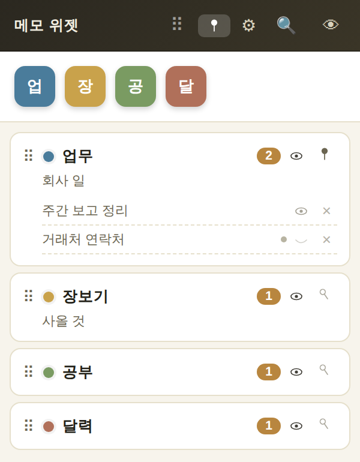
위쪽 = 주제 버튼, 아래쪽 = 주제 목록. "업무"를 눌러 메모 목록을 펼친 모습이에요.
위쪽 주제 버튼 — 누르면 그 주제로 새 메모가 바로 만들어져요.
주제 칸(아래 목록) — 한 번/두 번 클릭했을 때 무엇을 할지는 설정에서 고를 수 있어요. 자세한 건 다음 위젯 토글 부분에 모아뒀어요.
메모 제목 클릭 — 안 열려 있으면 열고, 열려 있으면 닫아요.
메모 옆 × — 그 메모를 휴지통으로 보내요.
⠿ 손잡이 — 위젯을 옮길 때 잡는 곳이에요. 주제 줄 왼쪽에도 ⠿ 가 있는데, 그걸 잡고 끌면 주제 순서를 바꿀 수 있어요.
주제 버튼 아래 얇은 색 막대 — 카테고리(상위주제)예요. 누르면 그 카테고리에 속한 주제들을 위젯에서 잠시 감춰요. 카테고리를 안 만들었으면 이 줄은 안 보여요.
🔍 — 작은 검색창이 따로 떠요. 제목과 본문에서 찾아 주제별로 묶어 보여주고, 목록에서 누르면 그 메모가 열려요.
⚙ — 설정 화면을 열어요.
👁 — 메모 전체를 숨기거나 다시 보이게 해요(아래 위젯 토글 참고).
📌 — 위젯을 항상 맨 위에 띄울지 정해요.
주제를 만들고·이름을 바꾸고·색을 바꾸고·지우는 것은 설정 > 주제관리에서 해요. 위젯에서 할 수 있는 건 순서 바꾸기, 주제별 항상 위(핀), 숨긴 주제 다시 꺼내기예요. 위젯에는 우클릭 메뉴가 없어요.
위젯 세로 크기는 마우스로 직접 늘리거나 줄일 수 없어요. 주제 개수와 펼침 상태에 맞춰 자동으로 맞춰져요(설정 > 위젯에서 자동 확장을 끄면 가로·세로를 숫자로 직접 정할 수 있어요). 위젯이 화면 아래쪽에 있으면 목록이 위로 펼쳐져요. 마지막 위치는 다음에 앱을 켤 때도 그대로 기억돼요.
🔁위젯 토글 동작 모음
위젯에는 누를 때마다 상태가 바뀌는 "토글" 동작이 많아서, 헷갈리지 않게 여기 한 곳에 모아뒀어요.
주제 버튼 — 위젯을 펼쳤을 때 (위쪽 아이콘 줄)
클릭 — 그 주제로 새 메모를 만들어요.
주제 버튼 — 위젯을 접었을 때
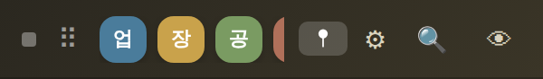
타이틀바를 더블클릭하면 이렇게 한 줄로 접혀요.
한 번 클릭 — 새 메모를 만들어요.
두 번 클릭 — 그 주제 메모 전체를 숨기기 ↔ 보이기로 바꿔요.
주제 칸 — 위젯을 펼쳤을 때 (아래 목록)
한 번 / 두 번 클릭 — 설정 > 위젯에서 정한 동작이 실행돼요. 고를 수 있는 건 아무 동작 안 함 / 목록 펼치기 / 메모 전체 열기·숨기기 / 새 메모 만들기 네 가지예요.
메모 목록을 보려면 둘 중 하나를 목록 펼치기로 정해 두어야 해요. 목록은 주제마다 따로 펼쳐져서 여러 주제를 동시에 펼쳐 둘 수 있어요.
Ctrl+클릭 — 주제 버튼·주제 칸 어디서나 (토글 아님)
그 주제의 지금 화면에 보이는 메모창들을 다른 프로그램 창보다 맨 앞으로 가져와요. 누를 때마다 항상 앞으로만 가져오고, 뒤로 보내는 동작은 없어요. 메모창은 평소 다른 작업을 방해하지 않으려고 조용히 떠서 다른 창에 가려질 수 있는데, 필요할 때 이걸로 꺼내볼 수 있어요.
눈(👁) 아이콘
주제 줄의 눈 아이콘 — 그 주제 메모가 지금 화면에 보이는 중인지 알려주는 표시예요. 눈 아이콘 자체에는 기능이 없어서, 누르면 주제 줄을 누른 것과 똑같이 동작해요.
위젯 위쪽의 눈 아이콘 — 누를 때마다 ①모두 숨기기 → ②누르기 전 상태로 → ③모두 보이기 → ④누르기 전 상태로, 이렇게 네 단계를 돌아요. 다음에 무엇이 실행될지는 마우스를 올리면 알려줘요. 이 상태는 컴퓨터를 껐다 켜도 기억돼요.
핀(📌) 아이콘
주제 줄의 핀 — 그 주제 메모들을 항상 맨 위에 띄울지 켜고 꺼요.
위젯 위쪽의 핀 — 위젯 자체를 항상 맨 위에 띄울지 켜고 꺼요.
접기
타이틀바 더블클릭 — 위젯을 접기 ↔ 펼치기로 바꿔요. 접으면 한 줄만 남아요(버튼이 아니라 빈 곳을 더블클릭해야 해요).
접힌 상태에서 작은 네모 버튼 — 한 번 더 줄여서 손잡이만 남겨요. 다시 누르면 원래 접힘 상태로 돌아가요.
📝메모창
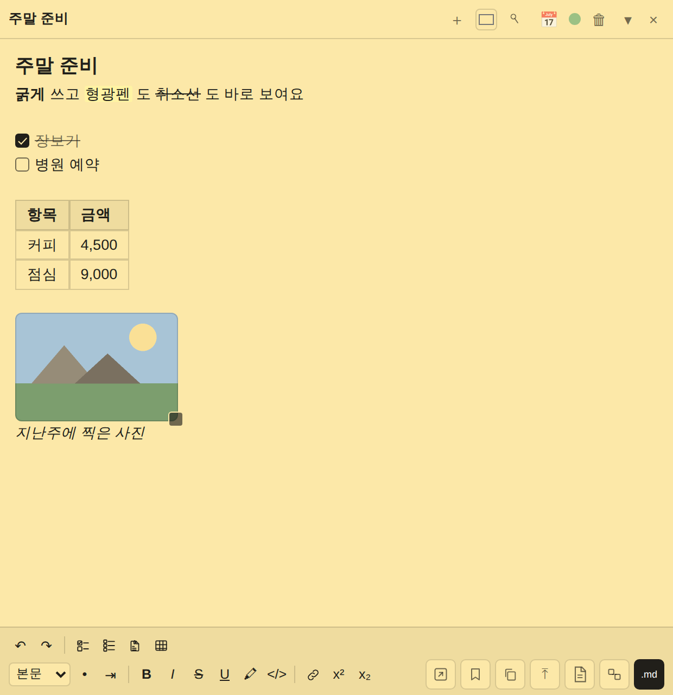
글씨 서식·체크리스트·표·그림이 모두 본문 안에 들어 있어요.
버튼이 안 보인다면 메모창을 한 번 클릭해 보세요. 메모창은 편집 중이 아닐 때 위·아래 버튼이 모두 숨어서 깔끔하게 보여요. 클릭하면 다시 나타나요(접어 둔 메모는 클릭할 곳이 없으니 접기·닫기 버튼이 계속 보여요).
제목줄(맨 위)
제목 칸(맨 왼쪽) 더블클릭 — 메모 제목을 쓸 수 있어요. 제목을 안 썼으면 "제목을 입력하세요"라고 보여요. 새 메모는 제목칸에 커서가 먼저 가요(주제 설정에서 "제목 먼저 쓰지 않기"를 켜면 바로 본문부터 써요). 어느 주제인지는 메모 색으로 구분해요.
＋ — 같은 주제로 메모를 하나 더 만들어요.
색상 네모 — 이 메모의 색을 바꿔요. 색에 맞춰 글자색도 자동으로 맞춰져요.
압정 모양 — 이 메모만 항상 맨 위에 띄워요.
📅 — 일정 날짜 칸을 켜고 꺼요(아래 달력 참고).
동그란 점 — 내보내기 후에 이 메모를 바탕화면에 남길지, 자동으로 지울지 정해요. 흐리면 설정의 기본값을 따르는 중이고, 진하면 이 메모만 반대로 고정한 상태예요.
🗑 — 메모를 휴지통으로 보내요(설정 > 휴지통에서 60일 안에 복구할 수 있어요).
▾ — 메모창을 접었다 펴요. 접으면 제목줄만 남아요.
× — 메모창을 닫아요(지워지는 게 아니에요. 위젯에서 다시 열 수 있어요).
일정 날짜와 알람
📅 를 누르면 제목줄 아래에 날짜 칸이 생겨요. 숫자만 빠르게 쳐도 되고(6자리=연월일, 8자리=네자리연도까지, 10·12자리는 시각까지), 달력에서 골라도 돼요. 없는 날짜를 치면 칸이 빨개져요.
🔔 을 누르면 알람 설정이 펼쳐져요. 알람 켜기, 며칠·몇 시간·몇 분 전에 미리 알릴지, 반복(없음·매일·매주·매월·매년), 알리는 방식(알림·소리·메모창 — 여러 개 같이 고를 수 있어요)을 정할 수 있어요.
↶ ↷ — 실행 취소 / 다시 실행. Ctrl+Z, Ctrl+Y 로도 돼요. 서식·표 고치기·체크 표시까지 전부 되돌릴 수 있어요.
체크박스 두 줄 모양 — 빈 줄을 기준으로 덩어리 하나씩 체크리스트를 만들어요.
체크박스 세 줄 모양 — 한 줄씩 체크리스트를 만들어요.
문서+클립 모양 — 파일이나 그림을 첨부해요.
격자 모양 — 표를 만들어요.
특수문자 버튼 — 설정 > 편집바 특수문자에 등록해 둔 글자가 버튼으로 나와요. 누르면 커서 자리에 바로 써져요.
오른쪽 아래 버튼들 — 차례대로 다른 주제로 이동, 템플릿으로 저장, 전체 복사, 파일 불러오기(txt·md), txt로 저장, 메모 연결, MD내보내기예요.
다른 주제로 이동 — 주제를 고르면 메모 색도 새 주제 색으로 바뀌어요.
템플릿으로 저장 — 본문·그림·메모창 크기를 그 주제의 틀로 저장해요. 다음에 그 주제로 새 메모를 만들면 자동으로 채워져요(제목과 일반 첨부파일은 저장 안 돼요).
전체 복사 — 본문 전체를 복사해요.
불러오기 — txt·md 파일을 열어 본문에 넣어요. 이미 쓴 내용이 있으면 덮어쓸지 물어봐요.
저장은 자동이에요. 글을 멈추고 0.5초쯤 지나면 조용히 저장돼요. "저장됨" 같은 표시가 없는 게 정상이에요.
다른 곳에서 글자를 복사해 붙여넣으면 서식은 빠지고 글자만 들어와요(표와 그림은 예외예요).
✒️서식 — 쓰는 즉시 보여요
서식 버튼을 누르면 화면에서 바로 굵어지고, 바로 색이 칠해져요. 워드처럼 쓰시면 돼요.
화면에는 서식으로 보이지만, 실제로 저장되는 건 마크다운 글자예요. 그래서 MD로 내보내면 옵시디언에서도 똑같이 굵게·색칠해서 보여요. 서식을 만드는 기호는 화면에서 안 보이게 숨겨 둬요(인터넷 주소만, 커서가 그 줄에 있을 때 흐리게 보여요).
제목1 · 제목2 · 제목3 — 그 줄을 제목으로 만들어요. 제목을 다시 보통 글줄로 되돌리려면 줄 맨 앞에서 백스페이스를 누르세요(목록에서 "본문"을 고르는 걸로는 안 풀려요).
• 글머리 목록, ⇥ 들여쓰기
B 굵게 (Ctrl+B) — 이미 굵은 글자를 다시 선택해서 누르면 풀려요.
I 기울임 (Ctrl+I), S 취소선, U 밑줄 (Ctrl+U)
🖍 형광펜 — 누르면 색 여섯 가지가 떠요.
</> 코드 — 여러 줄을 선택하면 코드 덩어리로, 한 줄 안이면 글자만 코드로 표시돼요.
사슬 모양 링크 — 선택한 글자에 인터넷 주소를 연결해요.
x² x₂ 위 첨자 / 아래 첨자
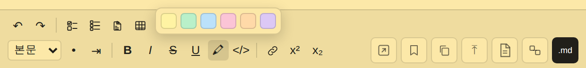
🖍 을 누르면 노랑·초록·파랑·분홍·주황·보라 여섯 색이 떠요.
기본 노랑은 이미 칠해진 글자에 다시 누르면 지워져요. 나머지 다섯 색은 지우개처럼 되돌아가지 않으니, 잘못 칠했으면 Ctrl+Z 로 되돌려 주세요.
한글은 글자를 다 만든 뒤에 서식이 반영돼요. 조합 중(예: "ㄱ" → "가" → "각")에는 화면이 바뀌지 않는 게 정상이에요. 제목이나 인용줄 맨 앞에서 백스페이스를 누르면 그 줄이 보통 글줄로 돌아가요.
☑️체크리스트와 표
체크리스트
체크리스트는 본문 안에 있어요. 예전처럼 따로 떨어진 목록이 아니라, 본문의 그 줄이 곧 항목이에요.
만들기 — 할 일을 적은 뒤 그 줄들을 선택하고, 아래쪽 체크박스 버튼을 눌러요. 아무것도 선택 안 하면 커서가 있는 줄만 바뀌어요. 빈 줄에서 누르면 빈 항목이 하나 생겨요.
두 버튼의 차이 — 두 줄짜리 아이콘은 빈 줄로 나뉜 덩어리 하나가 항목 하나, 세 줄짜리 아이콘은 한 줄이 항목 하나예요.
체크 — 네모를 누르면 체크돼요. 체크된 줄은 흐려지고 취소선이 그어져요. 다시 누르면 원래대로 돌아와요.
풀기 — 이미 체크리스트인 줄들을 선택하고 같은 버튼을 다시 누르면 풀려요. 줄 맨 앞에서 백스페이스를 눌러도 풀려요.
체크 표시도 Ctrl+Z 로 되돌릴 수 있어요.
표
표도 본문 안에 들어가요. 원하는 자리에 넣을 수 있어요.
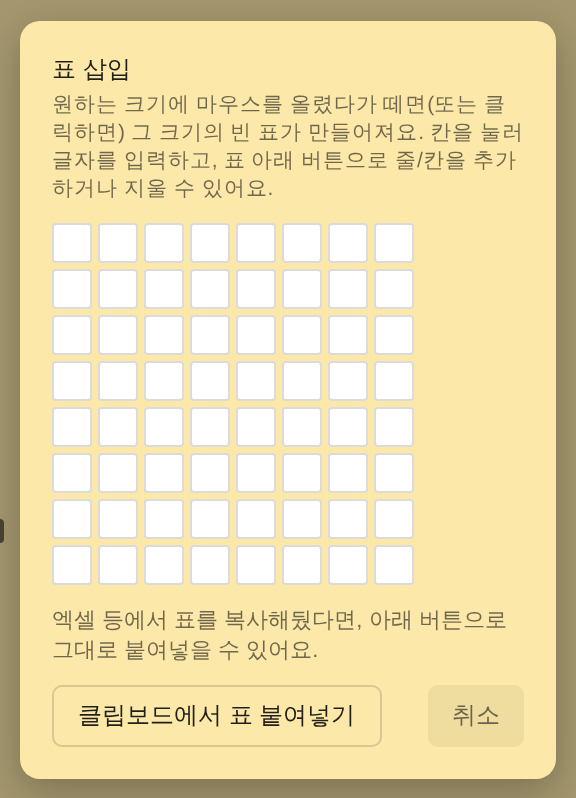
격자 위에 마우스를 올렸다 떼면 그 크기의 빈 표가 만들어져요.
만들기 — 아래쪽 격자 버튼을 눌러 크기를 고르면 돼요. 본문에 | 가 | 나 | 처럼 직접 쳐도 표가 돼요.
엑셀에서 가져오기 — 엑셀이나 워드에서 표를 복사한 뒤 본문에 그냥 붙여넣으면(Ctrl+V) 표로 들어와요. 표 만들기 창의 "클립보드에서 표 붙여넣기" 버튼을 써도 돼요.
칸 이동 — Tab 은 다음 칸, Shift+Tab 은 앞 칸이에요. 줄 마지막 칸에서 Tab 을 누르면 다음 줄로 가고, 없으면 새 줄이 생겨요.
줄 추가 — Enter 를 누르면 아래에 새 줄이 생겨요. 빈 줄에서 Enter 를 누르면 그 줄이 없어지면서 표 밖으로 빠져나와요.
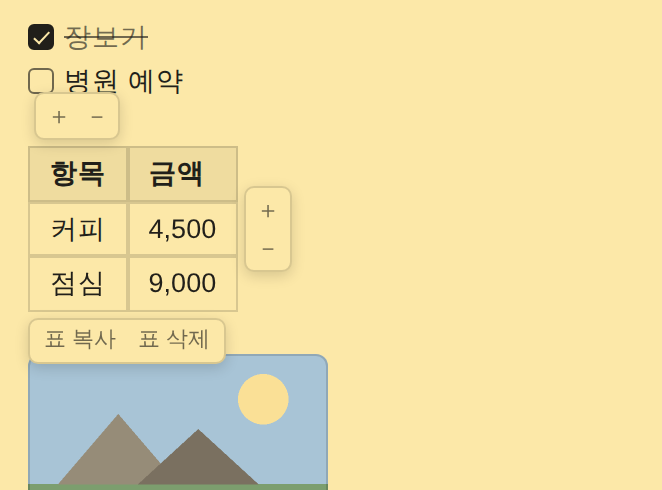
커서를 표 안에 두면 버튼이 세 곳에 나타나요.
버튼이 어디 있느냐로 무엇에 적용될지가 정해져요.
표 위쪽의 ＋ － — 세로줄(열)이에요. ＋ 는 지금 칸 오른쪽에 열을 하나 넣고, － 는 지금 칸이 있는 열을 지워요.
표 옆쪽의 ＋ － — 가로줄(행)이에요. ＋ 는 지금 줄 아래에 줄을 하나 넣고, － 는 지금 줄을 지워요.
표 아래의 표 복사 / 표 삭제 — "표 복사"를 누르면 엑셀·워드에 표 모양 그대로 붙여넣을 수 있게 복사돼요. "표 삭제"는 이 표를 통째로 지워요.
열이 하나만 남았을 때 열을 지우거나, 내용 줄이 하나만 남았을 때 그 줄을 지우면 표 전체가 사라져요. 실수했으면 Ctrl+Z 로 되돌리시면 돼요. 그리고 열 너비는 마우스로 조절할 수 없어요 — 글자 길이에 맞춰 자동으로 정해져요.
🖼이미지
그림도 본문의 한 줄이에요. 위에 글을 더 쓰면 그림도 같이 밀려 내려가요.
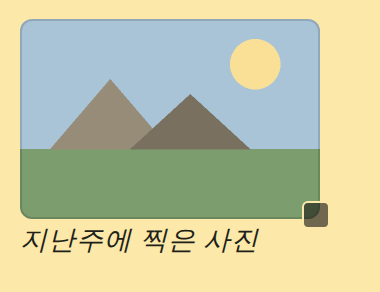
오른쪽 아래 작은 네모를 끌면 크기가 바뀌어요. 아래 기울임 글씨는 그림 설명이에요.
넣는 방법 세 가지 — ①복사한 그림을 붙여넣기(Ctrl+V) ②탐색기에서 본문으로 끌어다 놓기(여러 개도 돼요) ③아래쪽 첨부 버튼으로 파일 고르기
크기 바꾸기 — 그림 오른쪽 아래 모서리의 작은 네모를 끌면 돼요. 세로는 원본 비율대로 따라와요.
설명 넣기 — 그림 아랫줄에 글을 쓰고 기울임으로 만들면 설명처럼 보여요.
지우기 — 그림 줄에서 백스페이스나 딜리트를 누르면 통째로 지워져요.
본문에서 그림 줄을 지우면 그림 파일까지 같이 지워져요. 잘못 지웠으면 바로 Ctrl+Z 를 누르시면 살아나요. 그리고 가로 1500px보다 큰 그림은 저장할 때 자동으로 줄어들어요(움직이는 그림·webp·svg는 그대로예요).
그림 위에 표시하기
본문의 그림을 클릭하면 그림 위에 선·화살표·번호를 그려 넣는 창이 떠요.
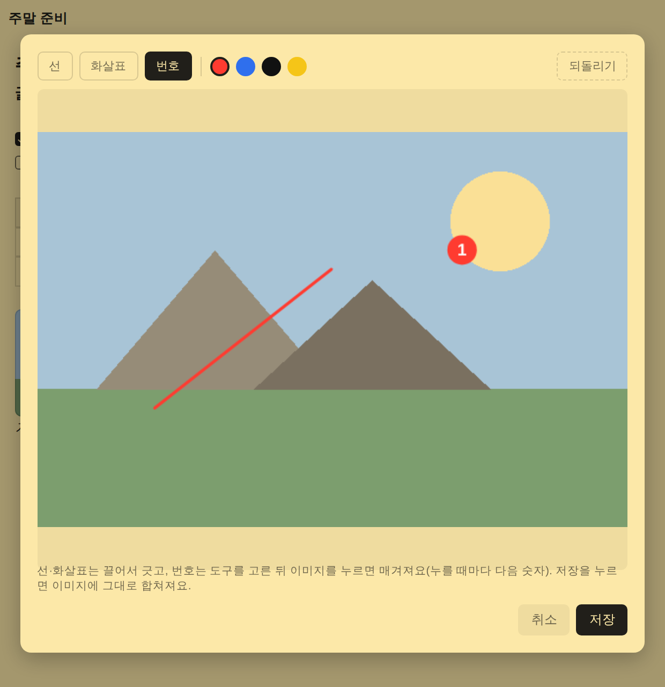
도구는 선·화살표·번호 세 가지, 색은 네 가지예요.
선 · 화살표 — 그리고 싶은 곳을 눌러서 끌었다 놓으면 돼요.
번호 — 번호 도구를 고른 뒤 그림을 누를 때마다 1, 2, 3… 이 차례로 찍혀요.
되돌리기 — 마지막에 그린 것 하나를 지워요.
저장 — 그린 내용이 그림에 그대로 합쳐져요. 취소하거나 Esc 를 누르면 그린 내용은 버려져요.
png·jpg 그림만 그릴 수 있어요. 움직이는 그림·webp·svg 는 이 창이 안 열려요.
🔗메모 연결
다른 메모로 바로 찾아갈 수 있게, 메모 안에 다른 메모로 가는 링크를 걸어주는 기능이에요. 서식의 "링크"(인터넷 주소 연결)와는 다른 거예요.
메모 연결 버튼을 누르면 작은 검색창이 따로 떠요.
제목이나 주제로 찾아서 고르면, 본문 맨 아래에 새 줄로 연결이 붙어요(글 쓰던 자리에 끼어들지 않게 항상 맨 아래로 가요).
연결된 글자는 본문에서 보라색으로 보여요.
목록에는 이미 MD로 내보낸 메모만 나와요. 아직 안 내보낸 메모는 파일명을 알 수 없어서 목록에 안 떠요. 이미 내보낸 메모에 연결을 걸면 자동으로 다시 내보내기까지 해줘요. 이 기능은 설정 > MD설정에서 "MD 기능 사용"이 켜져 있을 때만 쓸 수 있어요.
📤MD내보내기
이 앱은 옵시디언과 함께 쓰려고 만들었지만, 그냥 MD(마크다운) 파일로 저장하는 기능이라 옵시디언 없이도 쓸 수 있어요. 옵시디언을 쓰신다면 저장 폴더를 옵시디언 Vault 폴더로 지정하기만 하면 자동으로 연동돼요.
처음 내보낼 때 — 파일명을 미리 채워서 보여줘요. 그대로 저장하거나 고치면 돼요(설정에서 "확인 없이 자동으로 내보내기"를 켜두면 안 물어보고 바로 저장돼요).
두 번째부터 — 물어보지 않고 같은 파일에 덮어써요.
버튼이 흐릴 때 — 마지막으로 내보낸 뒤 바뀐 게 없다는 뜻이에요. 본문을 고치면 다시 진해져요.
기본 파일명 규칙: 주제_제목_YYYYMMDD_001
주제가 없으면 "미분류", 제목이 없으면 "제목없음"으로 들어가요.
번호(001, 002…)는 같은 주제·제목·날짜로 이미 저장된 파일이 있으면 다음 번호가 되고, 날짜가 바뀌면 001부터 다시 시작돼요.
주제가 있는 메모는 저장 폴더 안에 그 주제 이름 폴더로, 없는 메모는 저장 폴더 맨 위에 저장돼요.
내보내기 전에 설정 > MD설정에서 저장 폴더를 먼저 지정해야 해요.
파일명 규칙 고치기 — 설정 > MD설정의 "MD내보내기 파일명 규칙"에서 주제·제목·날짜·번호를 각각 켜고 끌 수 있고, 사이에 넣을 기호(밑줄 _ / 붙임표 - / 공백)도 고를 수 있어요. 순서는 항상 주제 → 제목 → 날짜 → 번호로 고정이에요. 설정 화면에 예시가 바로 보여요.
📅달력
바탕화면에 띄워 두는 달력이에요. 트레이 아이콘을 우클릭 → 달력 열기로 열어요.
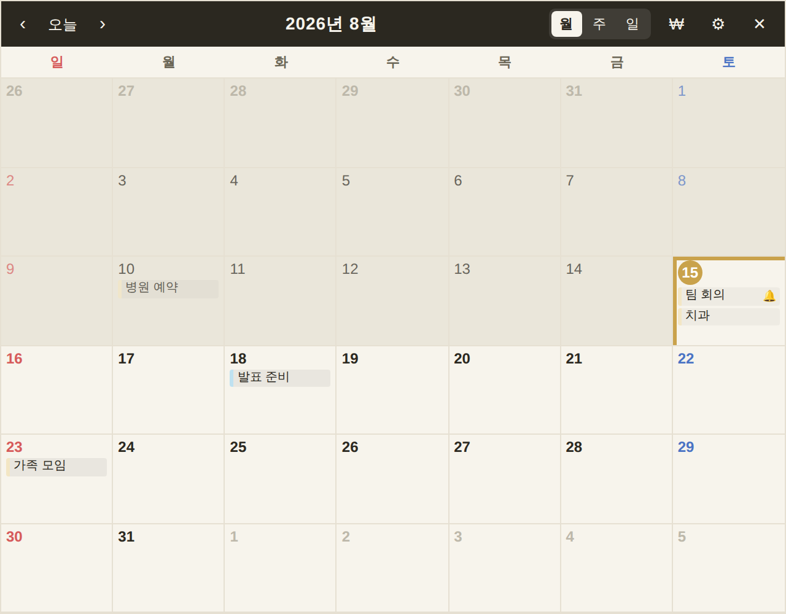
지난 날은 배경이 어둡고, 오늘은 금색 테두리, 앞으로 올 날은 글씨가 진해요.
달력은 평소 잠겨 있어요. 바탕화면처럼 두고 보라고 그렇게 만들었어요. 쓰려면 달력 아무 곳이나 더블클릭하세요. 다른 창을 누르면 다시 잠겨요.
‹ 오늘 › — 앞뒤로 넘기고, 오늘로 돌아와요.
월 · 주 · 일 — 보기를 바꿔요. 넘기는 단위도 같이 바뀌어요(한 달 / 일주일 / 하루).
일정 칸을 직접 클릭 — 그 메모창이 바로 열려요.
날짜 칸의 빈 곳 클릭 — 그날 일정 목록이 떠요.
🔔 표시 — 알람을 켜둔 일정이에요.
₩ — 가계부로 바꿔요(아래 참고). ⚙ 는 달력·가계부 설정이에요.
시각만 고치기
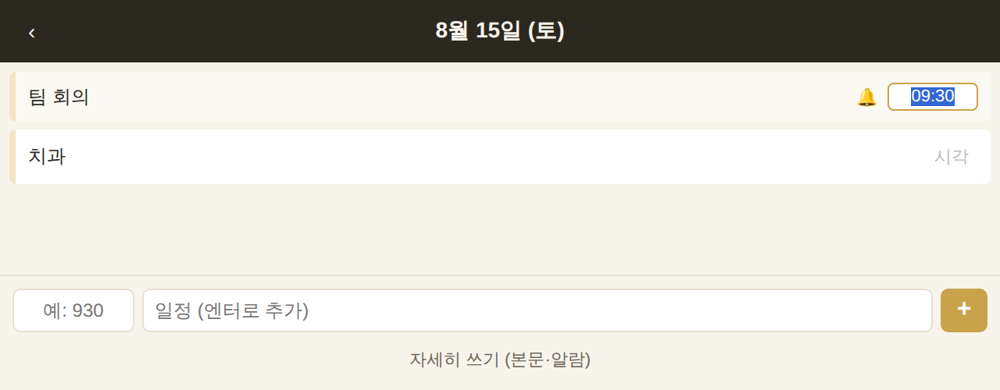
목록의 시각을 누르면 그 자리가 고칠 수 있는 칸으로 바뀌어요.
그날 목록에서 오른쪽 시각을 누르면 그 자리가 작은 칸으로 바뀌어요.
고친 뒤 Enter 를 누르거나 다른 곳을 누르면 저장돼요. Esc 를 누르면 취소돼요.
시각이 없는 일정에는 흐린 "시각" 글자가 있어요. 그걸 누르면 시각을 넣을 수 있어요.
반대로 칸을 비우고 저장하면 다시 시간 없는 일정이 돼요.
제목·본문·날짜·알람을 고치거나 일정을 지우는 건 메모창에서 해요. 달력에서 일정 제목을 누르면 그 메모창이 열려요.
일정 빠르게 넣기
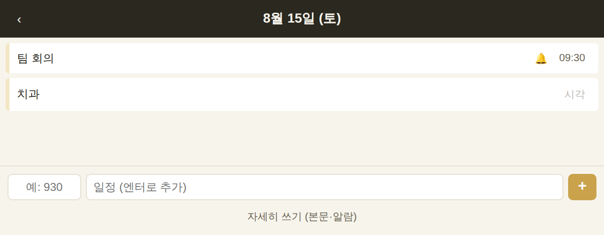
날짜 칸을 누르면 그날 목록 맨 아래에 입력칸이 나와요.
왼쪽 작은 칸이 시각, 그 옆이 제목이에요. 치고 Enter 만 누르면 일정이 만들어져요. 메모창은 안 떠요.
시각은 비워도 돼요. 비우면 시간 없는 일정이 되고, 9 나 930 처럼 대충 쳐도 09:00, 09:30 으로 알아서 맞춰져요.
저장한 뒤 커서가 제목칸에 그대로 남아 있어서 연달아 여러 개 넣을 수 있어요.
본문이나 알람까지 넣고 싶으면 아래의 "자세히 쓰기" 를 누르세요. 주제를 고르면 그 주제로 메모창이 열려요.
빠른 입력칸으로 만든 일정은 "달력" 주제에 자동으로 들어가요. 이 주제는 첫 일정을 만들 때 자동으로 생겨요(빠른 입력을 안 쓰면 안 생겨요). 원래부터 날짜를 붙여 둔 다른 메모들은 그대로 있고 달력에 같이 보여요.
달력 설정 (⚙)
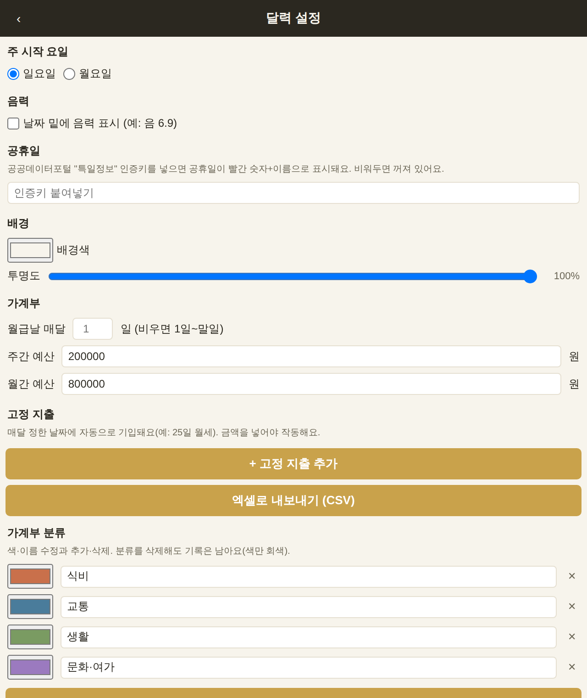
달력 설정과 가계부 설정이 여기 같이 있어요. 바꾸는 즉시 저장돼요.
달력·가계부 설정은 설정 화면이 아니라 달력창의 ⚙ 안에 있어요.
주 시작 요일 — 일요일 / 월요일
음력 — 켜면 날짜 밑에 음력이 작게 나와요(윤달은 "윤"으로 표시돼요).
공휴일 — 공공데이터포털의 "특일정보" 인증키를 넣으면 공휴일이 빨간 숫자와 이름으로 나와요. 비워두면 그냥 안 나오는 것뿐이에요.
배경 — 달력 배경색과 투명도를 정해요.
💰가계부
달력 위쪽의 ₩ 를 누르면 같은 달력이 가계부로 바뀌어요. 다시 누르면 달력으로 돌아와요.
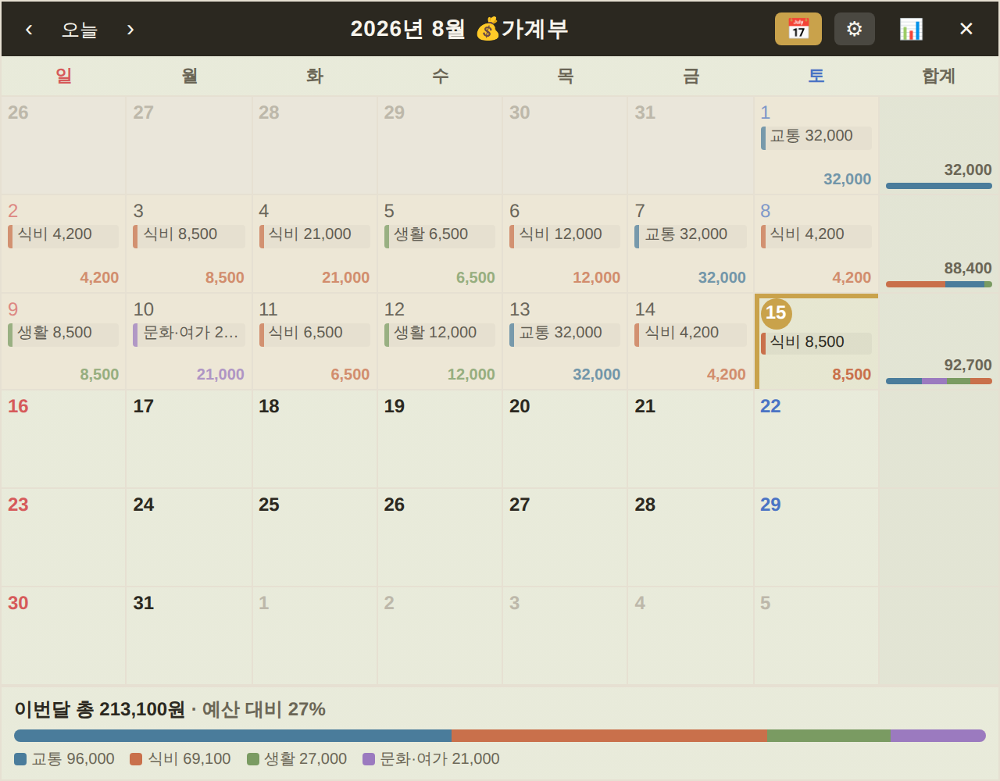
날짜마다 지출이 보이고, 오른쪽 끝에 주간 합계, 맨 아래에 이번 달 요약이 나와요.
가계부는 월간 보기를 기준으로 만들어졌어요. ₩ 를 누르면 자동으로 월간으로 바뀌어요(주·일 보기는 달력에서 쓰시는 게 좋아요).
날짜 칸에는 분류와 금액이 나오고, 칸 아래에 그날 합계가 나와요. 합계 글자색은 그날 가장 많이 쓴 분류의 색이에요.
오른쪽 끝 합계 칸을 누르면 그 주의 분류별 상세가 나와요.
맨 아래에 이번 달 총액과, 예산을 정해뒀다면 예산 대비 몇 %인지 나와요(100%를 넘으면 빨갛게 표시돼요).
지출 넣기
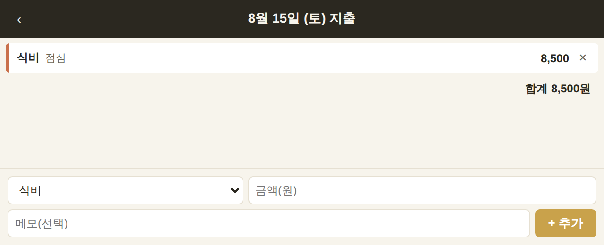
분류·금액·메모 세 가지만 넣으면 돼요.
날짜 칸을 누르면 그날 지출 목록과 입력칸이 떠요.
분류를 고르고 금액을 넣은 뒤 + 추가 를 누르거나 Enter 를 치면 저장돼요. 메모는 안 넣어도 돼요.
고치기 — 목록의 지출을 누르면 아래 입력칸에 그 내용이 채워져요. 고친 뒤 "수정"을 누르면 돼요.
지우기 — 지출 오른쪽 × 를 누르면 돼요.
가계부는 지출만 기록해요. 수입을 넣는 기능은 없어요.
통계 (📊)
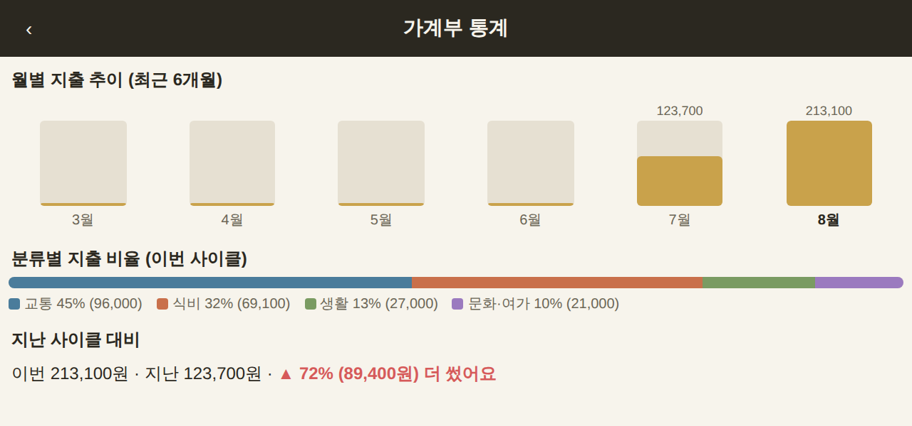
최근 6개월 추이, 분류별 비율, 지난 기간과 비교를 보여줘요.
월별 지출 추이 — 최근 여섯 달을 막대로 보여줘요. 지금 보고 있는 달이 맨 오른쪽이에요.
분류별 지출 비율 — 이번 기간에 어디에 얼마나 썼는지 색 막대와 목록으로 보여줘요.
지난 기간 대비 — 지난번보다 더 썼는지 덜 썼는지 한 줄로 알려줘요.
가계부 설정 (달력창의 ⚙ 안)
월급날 — 매달 며칠인지 정하면 "월급날부터 다음 월급 전날까지"를 한 달로 묶어서 계산해요. 비워두면 1일~말일 기준이에요.
주간 예산 · 월간 예산 — 정해두면 예산 대비 몇 %인지 보여주고, 많이 쓴 날에는 한마디 해줘요. 비우면 꺼져요.
고정 지출 — 매달 정한 날짜에 자동으로 기입돼요(예: 25일 월세). 금액을 넣어야 작동해요.
가계부 분류 — 이름과 색을 고치거나, 새로 만들거나, 지울 수 있어요. 분류를 지워도 기록은 남고 색만 회색이 돼요(분류가 하나만 남으면 지울 수 없어요).
엑셀로 내보내기(CSV) — 전체 지출 기록을 날짜·분류·금액·메모 표로 저장해요. 엑셀에서 바로 열려요.
⚙️설정 화면
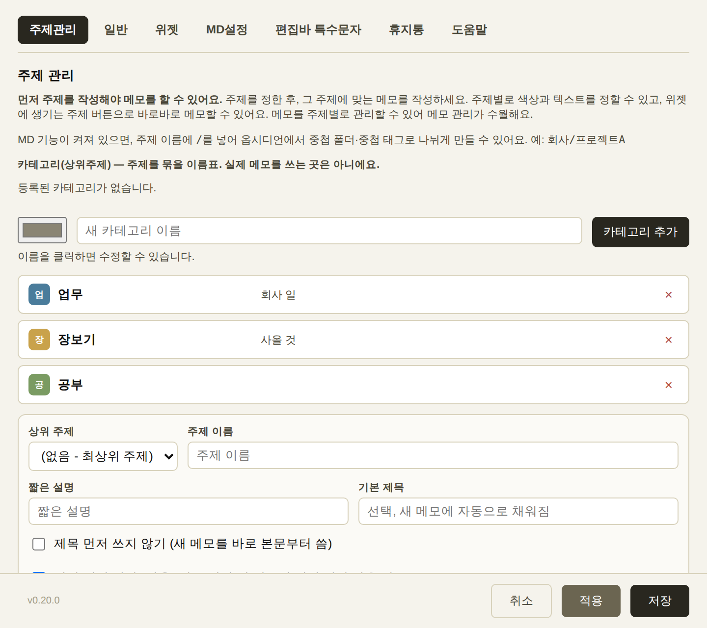
위쪽 탭으로 항목이 나뉘어 있어요.
탭은 주제관리 / 일반 / 위젯 / MD설정 / 편집바 특수문자 / 휴지통 / 도움말 일곱 개예요.
[주제관리] 먼저 주제를 만들어야 메모를 쓸 수 있어요. 주제 추가·수정·삭제, 아이콘 글자와 색(아이콘 배경 / 아이콘 글자 / 메모 배경), 짧은 설명, 새 메모에 자동으로 채워질 기본 제목, 위젯에서 숨김 여부, 달력(일정 날짜) 사용 여부를 정해요. 주제 이름을 클릭하면 그 자리에서 고칠 수 있어요. 카테고리(상위주제)는 주제를 묶는 이름표로, 주제 이름에 /가 들어가면 옵시디언에서도 폴더·태그로 정리돼요. 주제의 메모 배경색을 바꾸면 그 색을 쓰던 기존 메모들도 같이 바뀌어요(메모창에서 직접 다른 색으로 바꿔둔 메모는 그대로예요).
[일반] 윈도우 시작 시 자동 실행, 메모 여러 개 동시에 띄우기, 삭제할 때 확인창, 화면 투명도(위젯과 모든 메모창에 같이 적용), 글씨체(앱 전체에 적용돼요)를 정해요. 단축키를 등록하면 다른 프로그램을 쓰는 중에도 바로 새 메모를 만들 수 있어요(직전에 쓰던 주제로 생겨요). 전체 메모 내보내기로 모든 메모를 한꺼번에 저장하거나, 백업에서 복구하기로 다시 불러올 수 있어요(항상 추가만 되고 기존 메모는 안 지워져요). 저장공간 정리는 어디에서도 안 쓰는 첨부파일만 찾아 지워요. 자동 백업을 켜두면 정한 주기마다 저장되는데, 항상 같은 파일에 덮어써서 용량이 쌓이지 않아요.
[위젯] 상단바 색상, 크기(자동 확장을 끄면 가로·세로를 직접), 접힘 손잡이 위치(왼쪽·오른쪽), 클릭 동작(한 번/두 번)을 정해요. 클릭 동작은 주제 칸에만 적용되고, 목록 안 개별 메모는 이 설정과 상관없이 항상 열기/닫기예요.
[MD설정]MD 기능 사용 스위치로 마크다운·옵시디언 관련 기능을 통째로 켜고 끌 수 있어요 — 끄면 서식 도구, 표 버튼, 메모 연결, MD내보내기, 처리방식 점 버튼, 상위 주제 선택이 전부 숨겨지고 순수한 메모장이 돼요(내용은 그대로 있어요). 저장 폴더(Vault) 지정, 내보내기 후 동작 기본값, 확인 없이 자동 내보내기, 파일명 규칙도 여기서 정해요.
[편집바 특수문자] 메모창 도구 모음에 바로 누를 수 있는 특수문자 버튼을 만들어요. 몇 개 쓸지 정하고 각 칸에 문자를 넣으면 돼요. 아래에 화살표·괄호·수학기호 같은 참고표가 있어서 복사해 쓰시면 편해요.
[휴지통] 삭제한 메모가 60일간 보관돼요. 복구하거나 완전삭제 할 수 있고, 휴지통 비우기로 한 번에 지울 수도 있어요. 60일이 지나면 자동으로 완전히 지워져요(복구 불가).
[도움말] 지금 보고 있는 이 설명서예요.
취소는 바꾼 내용을 버리고 창만 닫아요. 적용은 창을 닫지 않고 바로 저장해요. 저장은 저장하고 창을 닫아요. 설정창이 열려 있는 동안에는 메모 편집이 잠겨요.